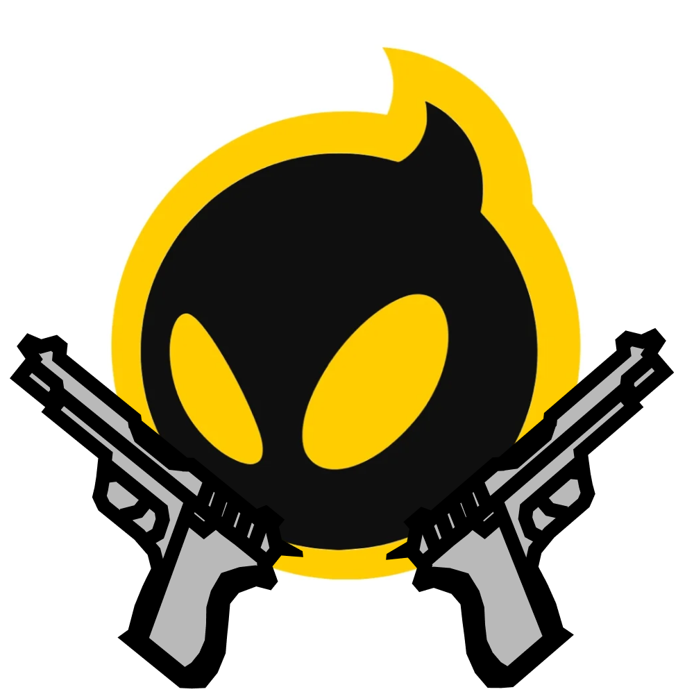

Fire Shooter is a gaming website focused on FPS games, reviews, and updates.
FireShooter is an online platform dedicated to reviewing FPS games. This platform provides users with a list of most popular FPS games including such games as Call of Duty, Valorant, CS:GO, and Blood Strike. Such games are known for their exciting gameplay, cooperative elements, and enjoyable fights. In addition, FireShooter offers easy-to-understand review and ratings of the selected FPS games, so that gamers will be able to comprehend each particular game quickly and effectively. Thus, this platform enables users to know more about various FPS games and choose which ones to play.